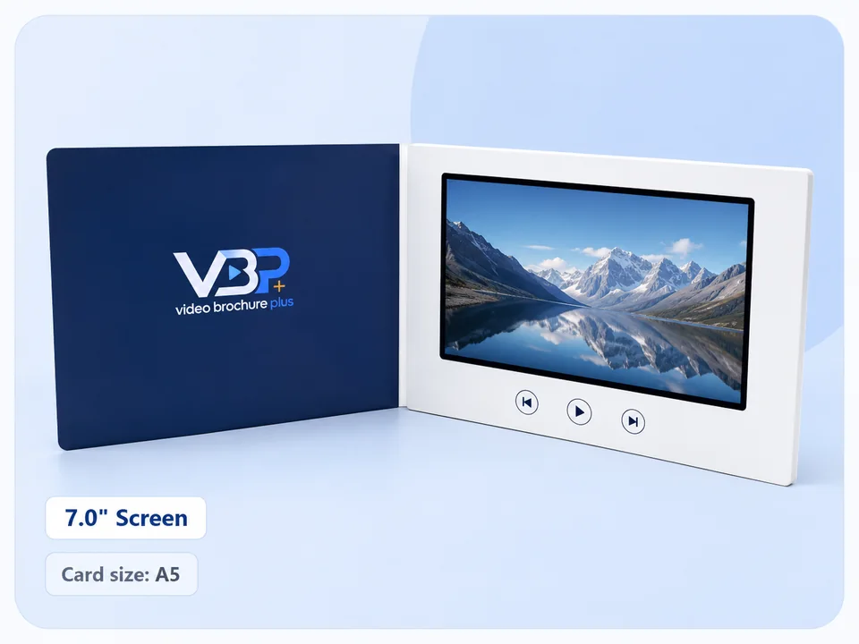

Match the content
Choose a larger screen when the video includes product details, interface demonstrations, diagrams or subtitles that must remain legible.
Common video brochure screens range from 2.4 to 10.1 inches. The right choice depends on viewing distance, card dimensions, content detail, recipient experience, quantity and budget—not screen size alone.

Short answer: 4.3- and 5-inch screens suit compact cards and invitations; 7-inch screens provide a larger presentation area for B2B sales material; 10.1-inch screens suit premium presentation formats where finished size and shipping volume are acceptable. Final dimensions and component availability must be confirmed for each project.
| Screen | Typical planning use | Advantages | Trade-offs to check |
|---|---|---|---|
| 2.4 inch | Compact greeting or business-card concepts | Small footprint and lightweight format | Limited viewing area; best for short, simple content |
| 4.3 inch | Invitations, compact brochures and targeted mail pieces | Balanced screen impact and card size | Text-heavy video may be difficult to read |
| 5 inch | General B2B presentations and branded invitations | More viewing area without moving to a large card | Confirm finished dimensions and packaging |
| 7 inch | A5-style sales presentations, launches and training | Stronger visual presence for demonstrations | Higher component, packaging and shipping requirements |
| 10.1 inch | Premium presentations and large-format kits | Largest viewing area in the standard range | Finished pack size, weight and budget require early confirmation |
Choose a larger screen when the video includes product details, interface demonstrations, diagrams or subtitles that must remain legible.
A mailed campaign must account for outer packaging and shipping. A hand-delivered sales kit can prioritize presentation impact.
Use a physical sample to confirm the perceived size, print area, playback and opening experience before committing to production.
Specifications shown are planning guidance. Final component, dimension and production details are confirmed during quotation and sample approval.
No. A larger screen creates more impact but also changes the finished size, packaging, shipping volume and budget. Choose according to the project, not the largest available component.
Five- and seven-inch formats are common planning options for A5-style presentations, but the final layout depends on orientation, margins, buttons and construction.
Yes. Ask which standard samples are available, then confirm whether a custom prototype is needed for final approval.
Share your use case, quantity, destination and video content. We will recommend a configuration to evaluate.
Request a recommendation